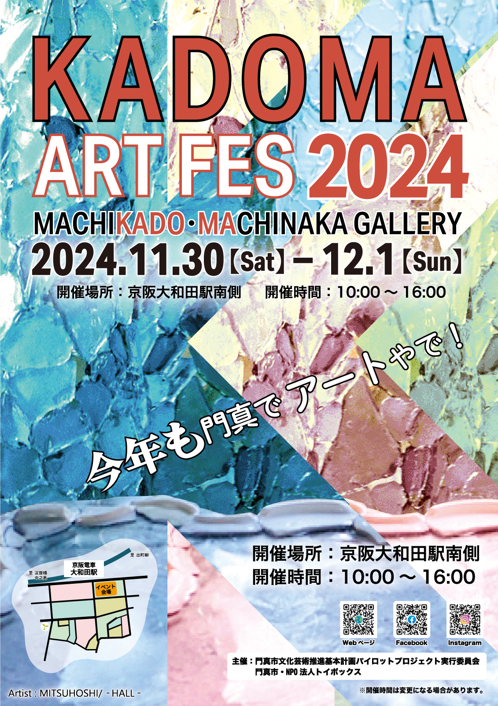

KADOMAARTFES2024開催情報
KADOMAARTFES2024
開催情報
カドマアート・マルシェ
in 大和田 2026

職人の街、門真市ならではの『アートとアイデアの可能性』を感じる事ができるのがKADOMA ART FES。 大和田駅前広場をメインとし、大和田南商店街周辺をアートで染める「MACHIKADO MACHINAKA GALLERY」を開催いたします。 アートコンテストやアートを感じれるワークショップなど様々なアートイベントを予定。
イベントの詳細
職人の街、門真市ならではの『アートとアイデアの可能性』を感じることができるのがKADOMA ART FES。 大和田駅前広場をメインとし、大和田南商店街周辺をアートで染める「MACHIKADO MACHINAKA GALLERY」と合わせて大和田駅前広場にてマルシェを開催いたします。 アートコンテストやアートを感じられるワークショップなど、様々なアートイベントを予定しています。
| 名称 | KADOMA ART FES 5 |
|---|---|
| メインイベント | 門真のまちをアートで染めよう MACHIKADO MACHINAKA GALLERY |
| 開催日時 | 2026年3月7日 (土) 〜 3月8日 (日) 10:00 〜 16:00 |
| 開催場所 | 大和田駅前広場/ハッピービーンズカフェ |
| 入場料 | 無料 |
| 主催 | 門真市文化芸術推進基本計画パイロットプロジェクト実行委員会 門真市 NPO法人トイボックス |
出展情報

全体コンテンツ
- 門真のまちをアートで染めよう MACHIKADO MACHINAKA GALLERY
- KADOMA ART FES 5 CONTEST
- カドマアート・マルシェ in 大和田 2026
- ライブステージ
- スタンプラリー
- ウォールアート
- コンテスト授賞式
- 入賞作品の展示